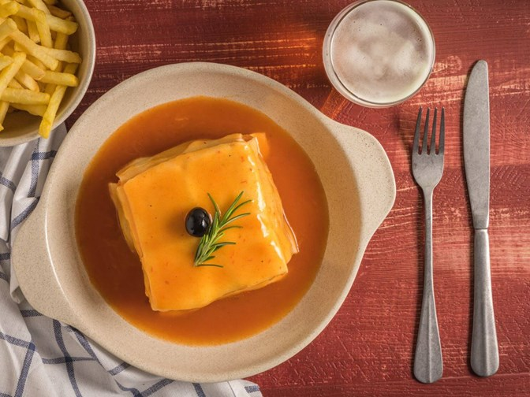

Francesinha

Description:
Francesinha is a sandwich that is served on a plate. The recipe uses thick slices of white loaf bread
with ham, sausage, cheese, and steak. The sandwich is then topped with more cheese, usually
taken to the oven to melt, and lastly, a slightly spicy sauce on top.
Ingredients
- 4 slices of bread
- 2 fresh sausages
- 2 fresh smoked sausages
- 2 thin steaks
- 4 slices of bread(stale)
- 10 slices of any preffered melty cheese
- 4 slices of ham or preffered salami
- 2 eggs
- 2 chopped onions
- 4 crushed cloves garlic
- 2 oz butter
- 2 Tbsps OO
- 2 bay leaves
- Some pork fat or bacon
- 500 ml tomato passata
- 1 fresh chilli or chilli flakes
- 1x 330 ml bottles beer(lager beer for tradition)
- 175 ml white whine(optional)
- Splash brandy and port(optional)
- 500 ml beef or chicken stock
- Milk and flour for thickening
Steps:
- Sandwich filling: Cut the sausages lengthwise and season with salt and pepper. Season the steaks as well.
Grill the sausages first and then the steaks so they stay medium rare.
- Meanwhile, make the sauce: Chop the onions and the garlic and let them sizzle on the pan with some butter,
olive oil, the bay leaves, and bacon. Add the tomato passata and the chillies and bring to a fast simmer.
Add the booze if you're using any and the stock, and simmer for 10-20 minutes. Mix the milk and flour with a
fork and add it to the sauce to thicken it. Remove the bay leaves and blend with a stick blender until the
sauce is smooth.
- Start shaping the francesinha: first a slice of bread, then one slice of cheese, one of ham/salami, the
steak, the sausages; layering between the two sandwiches until the meat is used up between them and you have
a sandwich. Cover all of the sandwiches with the remaining sliced cheese and bung in the oven or grill until
it melts.
- Once the cheese is melted, fry the eggs and top the sandwiches with them and pour the hot sauce over and
around. Serve with fries.
Back to top
Return